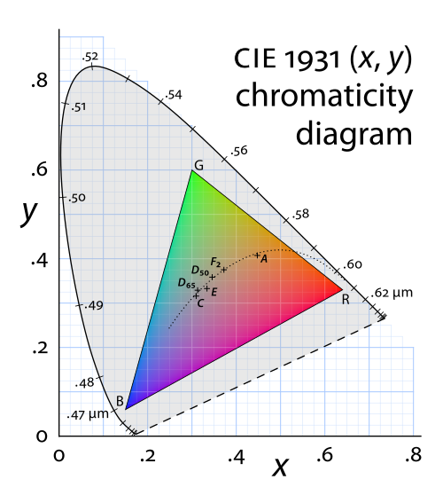
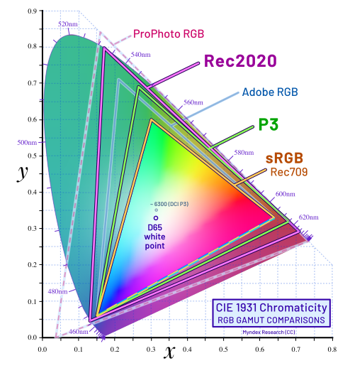

CIE xy 색도도에서 CIE Lab, ICC Profile, 색공간 변환까지. 1회차는 “색의 위치와 의미”를 먼저 잡는다.

1회차의 목표는 RGB 숫자를 그대로 믿지 않고, 그 숫자가 어떤 표준과 좌표계 안에서 해석되는지 설명할 수 있게 되는 것이다.
CSS의 color() 함수는 같은 3채널 값을 특정 색공간 안에서 해석할 수 있다. 아래에서 같은 숫자를 여러 웹 표준 색공간으로 비교해 본다.
rgb()와 #hex는 기본적으로 sRGB다. 선택지는 CSS 표준 색공간이며, 미구현 항목은 자동으로 비활성화된다.
색공간은 물리적 스펙트럼과 인간 관찰자의 반응을 함께 다룬다. 그래서 CIE 표준 관찰자와 색상 매칭 실험이 출발점이 된다.
L, M, S 원추세포의 민감도 차이가 색 지각의 생리적 기반이 된다.
관찰자가 기준 색과 세 기본 빛의 조합이 같아 보인다고 판단한 결과를 표준화한다.
CIE XYZ는 장치 독립 좌표이고, CIE xy는 XYZ를 정규화해 밝기 크기를 제거한 색도 좌표다.
CIE Lab은 XYZ와 기준 흰색을 바탕으로 색을 명도와 반대색 축에 배치해, 사람이 느끼는 색 차이를 더 다루기 쉽게 만든다.
sRGB, Display P3, Rec.2020은 이름이 아니라 원색과 화이트 포인트를 가진 표준이다. CIE xy는 그 관계를 한 장의 지도처럼 보여준다.

RGB 원색이 CIE xy에서 어디에 있는가.
무엇을 흰색 기준으로 삼는가.
코드값과 선형광의 관계를 어떻게 해석하는가.
matrix coefficients와 color range까지 함께 읽는다.
입력 RGB의 의미를 해석하고, 장치 독립 좌표를 거쳐, 대상 색공간의 규칙으로 다시 표현한다.
디스플레이는 빛을 더하고, 인쇄는 잉크가 빛을 흡수한다. CMYK 변환은 RGB의 단순 반대가 아니라 인쇄 조건의 결과다.
RGB는 발광 장치에서 빛을 더해 색을 만든다.
CMYK는 종이와 잉크, 총잉크량, black generation의 제약을 받는다.
Source profile과 target profile은 PCS(Profile Connection Space)를 통해 연결된다. PCS는 CIE XYZ 또는 CIE Lab 기반이며 D50 기준이 중요하다.
같은 RGB 값, assign vs convert, gamut clipping, RGB to CMYK를 직접 비교하며 색공간 변환의 중간 단계를 확인한다.
이 RGB 값은 어떤 색공간에서 어떤 색으로 해석되는가? 이 변환은 색의 의미를 유지하는가, 숫자만 바꾸는가?